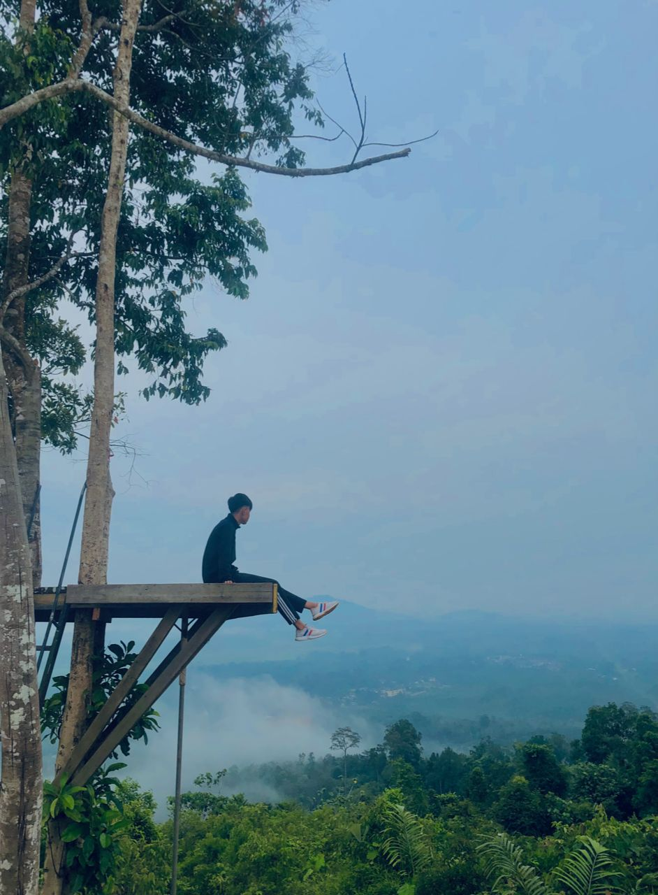
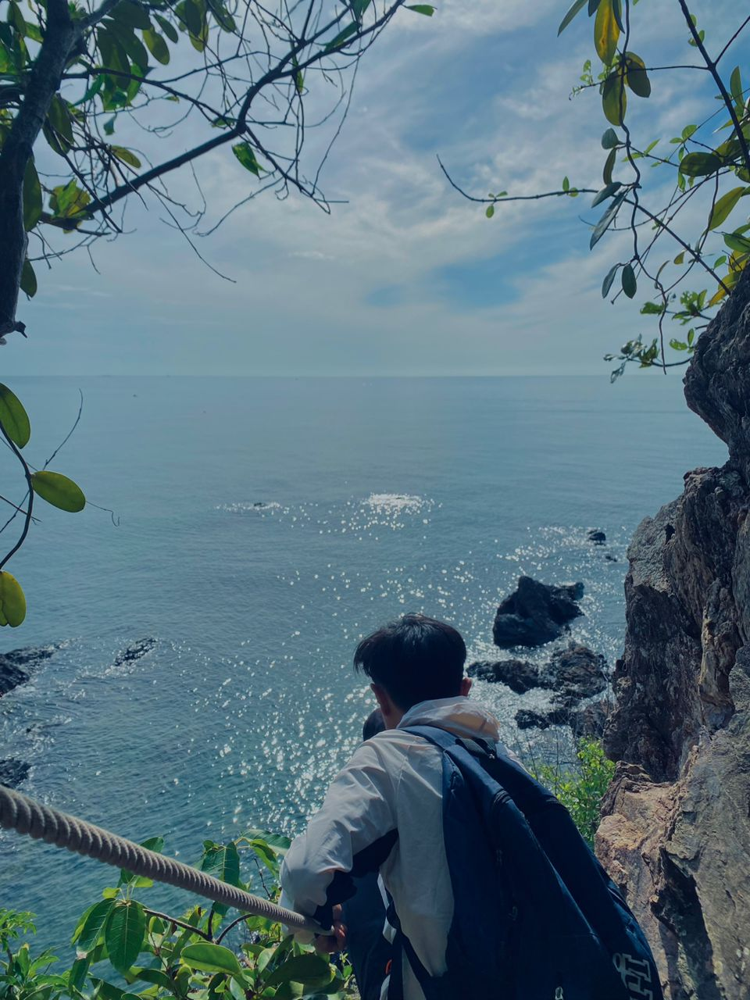
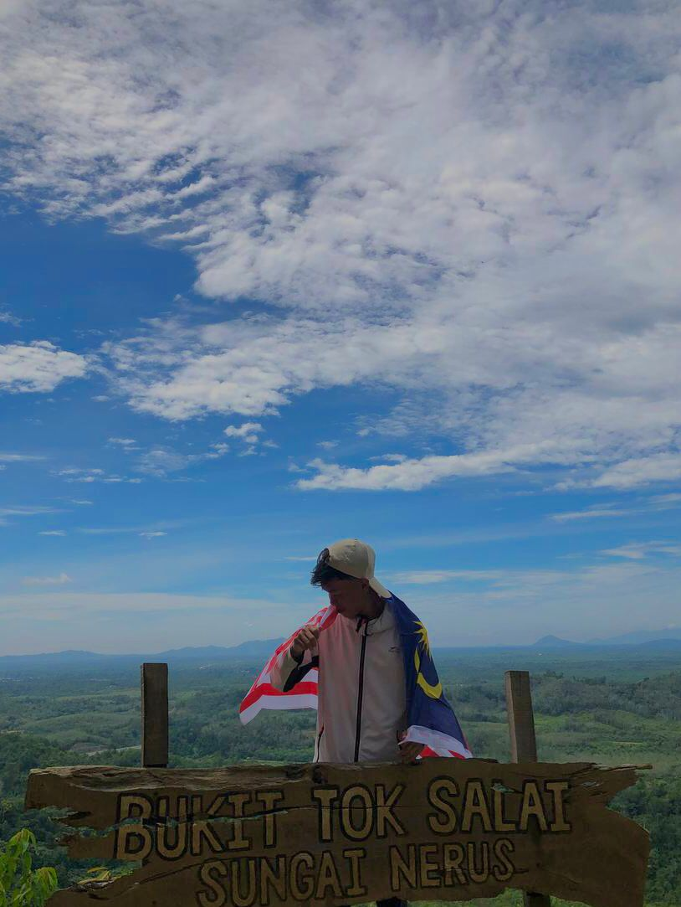

I successfully climbed this hill in 2023 and it is located in the district of Marang, Terengganu. It took me 30 minutes to reach the summit of the hill. This hill is famous for its beautiful view facing the beach. This place is also suitable for taking photos.
I successfully climbed this hill 3 times and the journey was very challenging due to its steep and sandy terrain, which made it difficult for me to climb. However, I managed to reach the summit of this hill. The hill is located in Kuala Berang, Terengganu.
Bukit Tok Salai is famous for its beautiful and refreshing hiking trails. I successfully climbed this hill in 2023, and it is located in the district of Marang, Terengganu. It is renowned for its beautiful hilltop views, perfect for enjoying sunrise and sunset.
